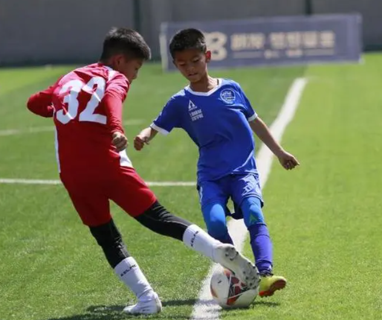
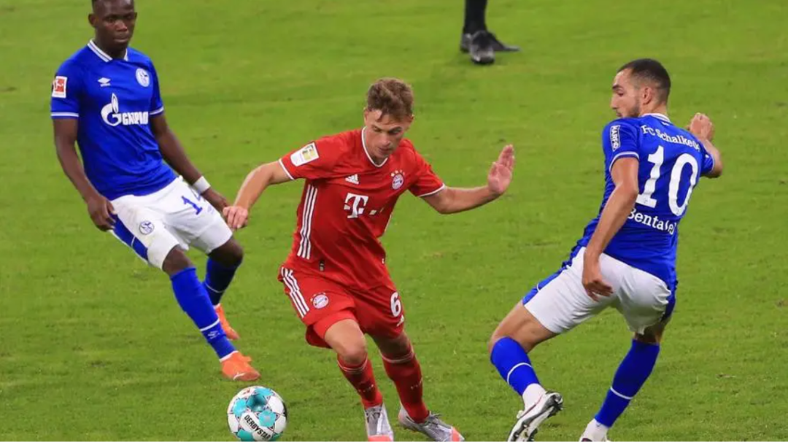
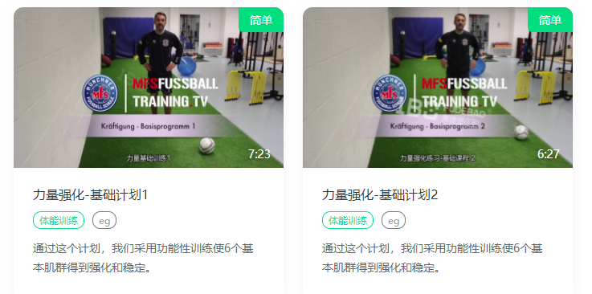
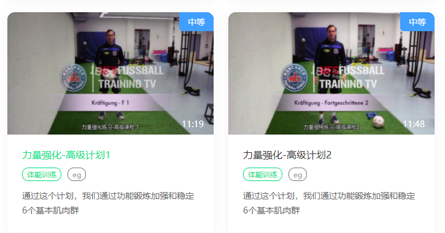
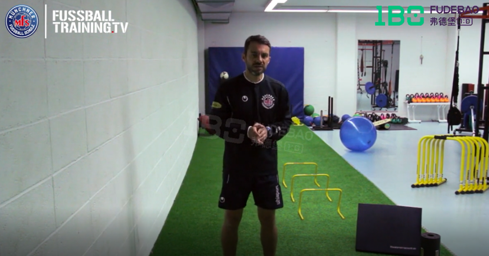

传统观念认为，孩子在青训阶段没必要进行力量强化训练，一般到16、17岁以后才开始进行。然而，慕尼黑足球学校却持有不同的观点，德国足协的一些研究也表明，孩子需要更早的进行力量强化练习。

力量强化训练的意义
相信很多教练在训练中都见过这样的孩子：跑步或冲刺时动作僵硬、身体歪歪扭扭，明明很努力却做不出标准动作。一些转身或者变向的动作，上半身转过来了，但屁股却纹风不动。这就是肌肉力量不足导致的。

想象一下，如果孩子拥有强有力的大腿肌群、很棒的核心力量和强壮的上半身，奔跑冲刺时就能很自然地发力带动腿向前迈，身体能量更容易传递到腿部，跑起来轻松自如。相反，如果身体不够强壮，上半身稳定性不足，跑动时上身摇摆，双腿要平衡上半身的摇摆，不仅跑不快，还更容易累。
力量强化训练的意义不仅仅是增强球员对抗和跑动能力，更重要的是，现代足球节奏越来越快，球员的场均跑动距离和比赛强度都在不断提升。上赛季德甲联赛的场均跑动距离已经超过110公里，有时半场比赛全队可能就要跑70公里。这无疑是对身体的巨大消耗，一些年轻球员经常会出现肌肉拉伤的情况，就是因为他们青训阶段进行的力量强化训练不够，导致无法长时间承受这样的负荷。

只有身体足够强壮，才能应对日后激烈的职业足球比赛，从一定程度上预防伤病。
开始的时间与频率
慕尼黑足球学校建议，孩子在D组末期、C组开始的阶段就可以开始进行力量强化练习，即12-13岁，神经系统发育闭合之后。
但要注意的是，12-13岁的孩子一定要注意训练的强度，尤其是核心肌群和背部肌群，训练时一定要避免受伤，所以要给他们安排难度不大的基础练习。
我们一比零足球网及小程序下 训练场->训练->体能训练 板块下的基础力量强化系列就是针对12-13岁孩子的。【点击下方图片即可进入小程序】

当然，在训练时，还是要关注孩子实际的身体状态。如果某部分内容是孩子现阶段身体承受不了的，教练也应该适当的删除一些内容。
等到孩子青春发育期过去以后，就可以开始练习进阶练习。练习频率方面，对于刚开始进行力量强化练习的孩子来说，至少需要保证每周三次才能达到效果。

可以将力量强化练习融入到日常技术训练中，比如在每次训练的间隙或者训练结束后额外进行15分钟。也可以让轮换或等待的球员在场边进行力量强化练习。不要让孩子们觉得这是什么额外任务，让孩子们开心快乐地训练是最重要的。
比如下面这个训练单元。
需要注意的是，比赛前一天不要进行力量强化训练，这样会削弱孩子们的比赛表现，还会增加孩子的受伤风险。另外，相同肌群的两次练习中间至少要间隔两天。
力量强化训练方法论
以下是慕尼黑足球学校创始人之一的舒伯克先生提出的具体训练方法：

欧足联A级执照教练
运动科学家与体能训练师
教练要明确，我们让孩子进行力量强化训练的目的是什么？
我们不是要培养健美运动员，而是希望球员能有一副肌肉强劲、稳定性强的身体。
所以一定不要急于求成，而是通过多次重复，慢慢地让孩子适应力量强化训练。
以俯卧撑为例，正确的做法应该是：
先做30-45秒，如果到30秒的时候，有些孩子觉得还能坚持，那就坚持到45秒。之后进行30-45秒的休息，休息时间要和练习时间保持一致，如此练习-休息重复5-6次，达到体力极限为止。但一个动作至少练习2组，每组之间可以休息约2-3分钟，短暂放松一下再进行下一组。
对于年龄较大练习进阶动作的孩子，单次练习时长要从45秒提升到1分钟，每组重复6次。进阶的练习肯定是要练满三组的。

最后，力量强化训练是一个长期的过程，教练一定要帮孩子规划好整体的方案，坚持做下去，一定可以看到提升。
足球的乐趣就在于，我们可以在训练中变得更强、更灵活、更有力量、体能充沛，最后可以在90分钟的比赛中坚持下来。

文字与图片版权归各自权利人所有；排版根据抓取内容整理。